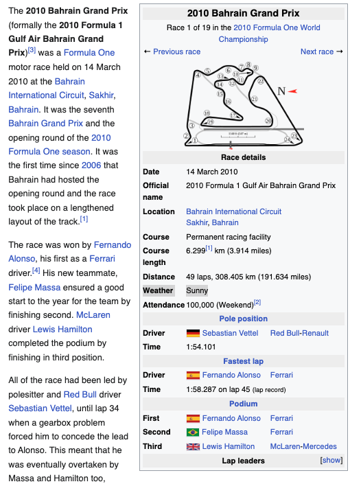

# for sending HTTP requests
import requests
# for data manipulations
import pandas as pd
# for numerical computations and array manipulations
import numpy as np
# for parsing and manipulating JSON data
import json
# for interacting with the operating system
import os
# for pattern matching, cleaning and extracting text
import re
# for working with dates and times
from datetime import datetime
import time
# for parsing and extracting data from HTML and XML documents
from bs4 import BeautifulSoup
# for reading and writing to csv files
import csvData Collection
Introduction
In this section, we focus on the methods and sources used to collect data that are relevant to the research questions of this project. The quality of the data collected determines the accuracy of insights and predictions. Poor data collection practices can lead to biased analysis, inaccurate results, and ineffective models. Therefore, careful planning and execution of data collection is essential for the success of any data-driven project.
Challenges in Data Collection Some important points to be considered when collecting data are:
- Data quality: Ensuring the data is accurate, complete, and relevant to the research questions is crucial.
- Inconsistencies: Data form different sources may have different formats, structures, naming conventions, and units of measurement, requiring a thorough understanding of the data for pre-processing.
- Ethics and Privacy: Data collection methods must adhere to ethical guidelines, ensuring that no sensitive or private information is collected or misused.
- Data Bias: Collecting data from sources that introduces bias can lead to inaccurate results and models.
- Technical Constraints: Issues such as API rate limits, website restrictions, or incomplete data can hinder data collection.
By addressing these challenges, it is ensured that the data collected was relevant, accurate, and reliable.
Methods
While there are various methods to collect data, web scraping and APIs are the two methods used in this project.
Web Scraping
Web Scraping is an automatic way to collect data from websites. It involves the use of automated scripts or tools to interact with the website’s structure to retrieve information. The data is extracted using selectors like tags, classes, or IDs. While web scraping can be tailored to collect a variety od data types from multiple web pages, one should be aware of the website’s terms of service and ethical scraping practices, and manage rate limits to avoid being blocked.
In this Project: Using Python libraries like requests and BeautifulSoup, weather information was extracted from infoboxes of each race’s Wikipedia pages.
Process:
- The URLs for each race were obtained from the race data collected, these links were used to locate the Wikipedia pages of each race.
- HTTP requests were sent to the Wikipedia pages to retrieve the HTML content.
- Parsing the HTML using BeautifulSoup locate the infobox containing the race metadata.
- Locating and extracting the Weather field from the table.
1
APIs
APIs (Application Programming Interfaces) are mechanisms that enable two software components to communicate with each other using a set of definitions and protocols. APIs enable developers to access data or functionality from a system without having to know the underlying implementation details, making it easier to integrate data from multiple sources. They act as intermediaries, providing a structured way for programs to request and retrieve information or services.2
How do APIs Work?3 APIs facilitate communication between applications, systems, or devices through a structured request-response cycle
- API Client: The process begins with an API client, which sends a request to the API server, which can be triggered by user interaction or external events.
- API Request: An API request typically contains the following components:
- Endpoint: URL that provides access to a specific resource.
- Method: Indicates that action to be performed on the resource.
- Parameters: Variables that are passed along with the request to customize the response.
- Headers: Key-value pairs that provide additional details about the request, such as authentication tokens or the content format.
- Request Body: Includes actual data required for operations like creating, updating, or deleting resources.
- API Server: Receives the request and performs actions such as authenticating the client, validating the input, and processing the request by retrieving or updating the requested data.
- API Response: The API server returns a response to the client, this typically includes:
- Status Code: A numerical code indicating the result of the request (e.g., 200 for success, 201 for resource creation, or 404 for resource not found).
- Headers: Additional metadata about the response.
- Response Body: The data requested by the client, or an error message.
API Architectural Styles:4
- REST (Representational State of Resource): A widely used style for data exchange over the internet. In RESTful APIs, resources are accessed through endpoints, and standard HTTP methods such as GET, POST, PUT, and DELETE are used to perform operations on these resources.
- SOAP (Simple Object Access Protocol): Protocol that uses XML to facilitate the transfer of highly structured messages between client and sever. While it provides features for security and reliability, it can be slower compared to other architectural styles.
- GraphQL: An open-source query language designed to allow clients fetch only the data they need via a single API endpoint. This eliminates the need for multiple requests, making it valuable for applications that operate over slower or less reliable network connections.
In this Project:
The Ergast Developer API was used to collect race, driver standings, circuit information, and pitstop data. “The Ergast Developer API is an experimental web service which provides a historical record of motor racing data for non-commercial purposes”5.
Code
Required Libraries
Race Information
Importance: Contains information about the season, round, date, grand prix name, location, results,wikipedia url of the race, driver and constructor details.
- Season: The year of the race.
- Round: The number of the race in the season.
- Grand Prix Name: The official name of the race.
- Results: Includes the finishing poistion and points earned.
- Driver Details: Provides information about the driver’s name, ID, nationality, and date of birth.
- Constructor Details: Constructor refers to the team that builds and maintains the cars. It contains information about the constructor’s name, ID, and nationality.
Source: ERGAST API
# funtion to get race results for a specifi year
def get_race_results(url, year, offset, limit=1000):
full_url = f"{url}/{year}/results.json?limit={limit}&offset={offset}"
# GET request
result = requests.get(full_url)
# output = JSON object
return result.json()# Testing for 2023 season
season_2023_json = get_race_results(url='http://ergast.com/api/f1', year=2023, offset=0)
# Save the data to a JSON file
with open('../../data/raw-data/race_data_2023.json', 'w') as outfile:
json.dump(season_2023_json, outfile)# collecting data from 2000 to 2022
# function to loop through years and fetch the results
def race_data(start_year, end_year, output_dr, url):
for year in range(start_year, end_year + 1):
# results for the current year
race_data = get_race_results(url, year, offset=0)
# save the output
output_file = os.path.join(output_dr, f"race_data_{year}.json")
# save the data to a JSON file
with open(output_file, 'w') as f:
json.dump(race_data, f)# call race_data()
race_data(
start_year = 2000,
end_year = 2009,
output_dr = "../../data/raw-data",
url = 'http://ergast.com/api/f1'
)Driver Standings
After each round, drivers earn points based on their final position. These points are added to their overall tally, and the driver with the most points at the end of the season wins the World Driver’s Championship (WDC).
Importance: Contains total points earned by each driver in every season from 2000 to 2023. It is crucial for identifying trends in driver performance over the years.
Source: ERGAST API
# function to fetch driver standings for a specific year
def driverstanding_info(url, season):
# construct the URL
full_url = f"{url}/{season}/driverStandings.json"
# GET request
response = requests.get(full_url)
return response.json()
# Function to fetch and save all driver standings for the given seasons
def driverstandings_info(start_year, end_year, output_file, url="http://ergast.com/api/f1"):
# for storing driver standings data
driver_standings_data = {}
# loop through each year
for year in range(start_year, end_year + 1):
# results for the current year
data = driverstanding_info(url, year)
# add the data with year as key
driver_standings_data[year] = data
# Save to output file
with open(output_file, 'w') as outfile:
json.dump(driver_standings_data, outfile)
# Call the function for seasons 2000–2023
driverstandings_info(
start_year=2000,
end_year=2023,
output_file="../../data/raw-data/driver_standings/driver_standings_2000_2023.json"
)Circuit Information
The race tracks are referred to as circuits.
Importance: This data includes the circuit name, locality, country as well as its longitude and latitude. These values can be used for collecting weather information on the race day.
Source: ERGAST API
def circuit_info(output_file, url):
results = requests.get(url)
# save to output file
with open(output_file, 'w') as f:
json.dump(results.json(), f)
circuit_info(output_file='../../data/raw-data/circuit_data.json', url = "http://ergast.com/api/f1/circuits.json")News of Top 10 Drivers
Standings in 2024 season as on 11-24-2024
Silly Season in F1 refers to the period of speculation, rumors, and announcements surrounding driver lineups for the next season. This period typically begins during the latter half of the season, as drivers, teams, and sponsors negotiate deals for the future. Headlines during the silly season often speculate on whether drivers will extend their contract, switch teams, or retire from the sport, creating a buzz that fuels media interest.
Importance: Analyzing news coverage about drivers can provide insights into their career trajectories, and potential moves in the upcoming season.
Source: NEWS API
Resources: NEWS-API DSAN 5000 Lecture Content
baseURL = "https://newsapi.org/v2/everything?"
total_requests=2
verbose=True
API_KEY='86d4dac5a4864ece92da90bc31277e53'# function to fetch news articles for a given topic
def news_data(topic, API_KEY, total_requests=1, verbose=True):
baseURL = "https://newsapi.org/v2/everything?"
# API parameters
URLpost = {
'apiKey': API_KEY, # API key
'q': '+'+topic, # topic
'sotBy': 'relevancy', # sort by relevance
'pageSize': 100, # maximum articles per pages = 100
'page': 1 # start with page 1
}
# last name of the drives to avoid spaces in the file names
file_name = topic.split()[-1]
# initialize a list to store all articles
all_articles = []
# loop through the number of API requests
for request_num in range(total_requests):
# make the API request
response = requests.get(baseURL, params=URLpost)
response_data = response.json()
# extract artivles from the response
articles = response_data.get('articles', [])
all_articles.extend(articles)
# increment the page number for next request
URLpost['page'] += 1
# output file path
output_dr = "../../data/raw-data/News_Drivers"
output_file = os.path.join(output_dr, f"{file_name}_raw_text.json")
# save to output file
with open(output_file, 'w') as f:
json.dump(all_articles, f, indent=4)
return all_articlesTop 10 Drivers as of Round 22 (Las Vegas Grand Prix)
- Max Verstappen
- Lando Norris
- Charles Leclerc
- Oscar Piastri
- Carlos Sainz
- George Russell
- Lewis Hamilton
- Sergio Perez
- Fernando Alonso
- Nico Hulkenberg
# testing
text_data = news_data('Max Verstappen', API_KEY, total_requests=1, verbose=True)text_data = news_data('Lando Norris', API_KEY, total_requests=1, verbose=True)
text_data = news_data('Charles Leclerc', API_KEY, total_requests=1, verbose=True)
text_data = news_data('Oscar Piastri', API_KEY, total_requests=1, verbose=True)
text_data = news_data('Carlos Sainz', API_KEY, total_requests=1, verbose=True)
text_data = news_data('George Russell', API_KEY, total_requests=1, verbose=True)
text_data = news_data('Lewis Hamilton', API_KEY, total_requests=1, verbose=True)
text_data = news_data('Sergio Perez', API_KEY, total_requests=1, verbose=True)
text_data = news_data('Fernando Alonso', API_KEY, total_requests=1, verbose=True)
text_data = news_data('Nico Hulkenberg', API_KEY, total_requests=1, verbose=True)Weather Data
Importance: Weather conditions play a crucial role in race strategy, tire choices, and driver performance.
Source: Wikipedia
# the url for each race is in the race data collected using ergast API
race_df = pd.read_csv("../../data/processed-data/all_race_results_cleaned.csv")race_data = race_df[['season', 'raceName', 'url']]race_data = race_data.drop_duplicates()race_data.head()| season | raceName | url | |
|---|---|---|---|
| 0 | 2010 | Bahrain Grand Prix | http://en.wikipedia.org/wiki/2010_Bahrain_Gran... |
| 24 | 2010 | Australian Grand Prix | http://en.wikipedia.org/wiki/2010_Australian_G... |
| 48 | 2010 | Malaysian Grand Prix | http://en.wikipedia.org/wiki/2010_Malaysian_Gr... |
| 72 | 2010 | Chinese Grand Prix | http://en.wikipedia.org/wiki/2010_Chinese_Gran... |
| 96 | 2010 | Spanish Grand Prix | http://en.wikipedia.org/wiki/2010_Spanish_Gran... |
def get_weather_from_wikipedia(url):
response = requests.get(url)
bs = BeautifulSoup(response.text, 'html.parser')
# locate the infobox table
table = bs.find('table', {'class': 'infobox infobox-table vevent'})
if not table:
print(f"No infobox found on the page: {url}")
return "Not Available"
# search for the "Weather" row in the table
for row in table.find_all('tr'):
# find the header cell with class 'infobox-label'
header = row.find('th', {'class': 'infobox-label'})
# check if it contains "Weather"
if header and 'Weather' in header.text: # Check if it contains "Weather"
# find the corresponding data cell with class 'infobox-data'
data = row.find('td', {'class': 'infobox-data'})
if data:
return data.text.strip()
race_data['weather'] = None
# fetch weather information for each URL
for index, row in race_data.iterrows():
url = row['url']
# for debuggin purpose
print(f"Fetching weather for: {url}")
# get the weather information
weather = get_weather_from_wikipedia(url)
# update the weather column
race_data.at[index, 'weather'] = weather
# save to output file
output_csv = "../../data/raw-data/weather/race_data_with_weather.csv"
race_data.to_csv(output_csv, index=False)
print(f"Updated race data saved to: {output_csv}")os.makedirs('cache', exist_ok=True)
fastf1.Cache.enable_cache('cache')track_data = []
def extract_track_features(year, race_name):
session = fastf1.get_session(year, race_name, 'Q')
session.load()
# Get the fastest lap
fastest_lap = session.laps.pick_fastest()
telemetry = fastest_lap.get_telemetry()
# Track Length
track_length = telemetry['Distance'].iloc[-1] # Distance of the fastest lap
# Max Speed
max_speed = telemetry['Speed'].max()
# Average Speed
avg_speed = track_length / fastest_lap['LapTime'].total_seconds()
# Percentage of Full Throttle
full_throttle = telemetry[telemetry['Throttle'] >= 95]
perc_full_throttle = (len(full_throttle) / len(telemetry)) * 100
# Number of Corners
telemetry['is_corner'] = telemetry['Speed'] < 100
num_corners = (telemetry['is_corner'] & ~telemetry['is_corner'].shift(1, fill_value=False)).sum()
# Number of Straights
telemetry['is_straight'] = telemetry['Speed'] > 150
num_straights = (telemetry['is_straight'] & ~telemetry['is_straight'].shift(1, fill_value=False)).sum()
return {
"Year": year,
"Grand Prix": race_name,
"Track Length (m)": track_length,
"Max Speed (km/h)": max_speed,
"Full Throttle (%)": perc_full_throttle,
"Number of Corners": num_corners,
"Number of Straights": num_straights
}
year = 2023
schedule = fastf1.get_event_schedule(year)
for _, event in schedule.iterrows():
if not pd.isna(event['Session1']):
try:
track_features = extract_track_features(year, event['EventName'])
track_data.append(track_features)
except Exception as e:
print(f"Failed for {event['EventName']} in {year}: {e}")
df_tracks = pd.DataFrame(track_data)
# merging all racetrack features into a single csv
folder_path = "../../data/raw-data/circuit_data/"
dataframes = []
for file_name in os.listdir(folder_path):
if file_name.endswith('.csv'):
file_path = os.path.join(folder_path, file_name)
df = pd.read_csv(file_path)
dataframes.append(df)
merged_df = pd.concat(dataframes, ignore_index=True)
output_file = "../../data/raw-data/circuit_data/merged_circuit_features.csv"
os.makedirs(os.path.dirname(output_file), exist_ok=True)
merged_df.to_csv(output_file, index=False)Pitstop data
# data available from 2011
# Function to fetch pitstop data for a specific race
def get_pitstop_data(year, round_number):
url = f"http://ergast.com/api/f1/{year}/{round_number}/pitstops.json?limit=1000"
response = requests.get(url)
if response.status_code == 200 and response.text.strip():
try:
return response.json()
except Exception as e:
print(f"Error parsing JSON for {year} Round {round_number}: {e}")
return None
else:
print(f"Failed to fetch data for {year} Round {round_number}: {response.status_code}")
return None
# Function to fetch race schedule
def get_race_schedule(year):
url = f"http://ergast.com/api/f1/{year}.json"
response = requests.get(url)
if response.status_code == 200:
return response.json().get("MRData", {}).get("RaceTable", {}).get("Races", [])
else:
print(f"Failed to fetch schedule for {year}: {response.status_code}")
return []
# Function to extract and save pitstop data to CSV
def fetch_and_save_pitstop_data(start_year, end_year, output_csv):
# Create the CSV file and write the header
with open(output_csv, 'w', newline='', encoding='utf-8') as csvfile:
fieldnames = ["Year", "Round", "RaceName", "DriverID", "Lap", "Stop", "Time", "Duration"]
writer = csv.DictWriter(csvfile, fieldnames=fieldnames)
writer.writeheader()
# Loop through years and races
for year in range(start_year, end_year + 1):
print(f"Fetching data for year: {year}")
races = get_race_schedule(year)
for race in races:
round_number = race.get("round")
race_name = race.get("raceName")
print(f"Processing {race_name} (Round {round_number}) in {year}")
# Fetch pitstop data for this race
pitstop_data = get_pitstop_data(year, round_number)
if pitstop_data:
races_list = pitstop_data.get("MRData", {}).get("RaceTable", {}).get("Races", [])
# Ensure there is race data
if races_list:
pitstops = races_list[0].get("PitStops", [])
# Write each pitstop to the CSV
for pitstop in pitstops:
writer.writerow({
"Year": year,
"Round": round_number,
"RaceName": race_name,
"DriverID": pitstop.get("driverId"),
"Lap": pitstop.get("lap"),
"Stop": pitstop.get("stop"),
"Time": pitstop.get("time"),
"Duration": pitstop.get("duration")
})
else:
print(f"No race data available for {race_name} in {year}")
output_csv = "../../data/raw-data/pitstop_data.csv"
fetch_and_save_pitstop_data(
start_year=2000,
end_year=2023,
output_csv=output_csv
)Summary
This section should be written for a technical audience, focusing on detailed analysis, factual reporting, and clear presentation of data. The following serves as a guide, but feel free to adjust as needed.
Challenges
- Discuss any technical challenges faced during the project, such as data limitations, computational issues, or obstacles encountered during analysis.
- Explain unexpected results and their technical implications.
- Identify areas for future work, including potential optimizations, further analysis, or scaling solutions.
Benchmarks
- Compare your findings to relevant research, industry benchmarks, or intuitive expectations, if applicable.
Conclusion and Future Steps
- Summarize the key technical points and outcomes of the project.
- Suggest potential improvements or refinements to this part of the project.
- Based on the results, provide actionable recommendations for further research or optimization efforts.